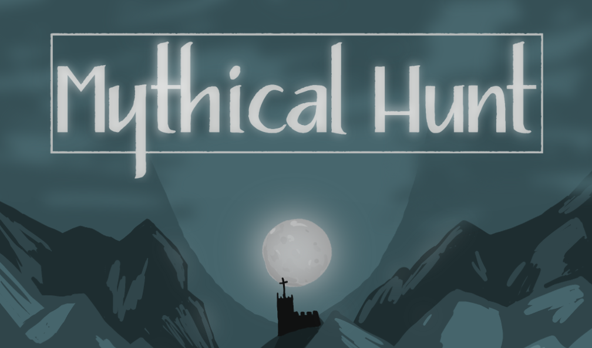

Projects
Click on a project to learn more
Mythical Hunt
Two player online co-op RTT game with a vampire theme and some RPG elements, made in Unreal Engine 5.
Mythical Hunt
|
Mythical Hunt is a co-op multiplayer RTT game developed in Unreal Engine over the course of 12 weeks. The game features a vampire/werewolf theme. Players can freely switch between four different characters, combining their abilities to defeat enemies and make it through the levels. The game, made in Unreal Engine 5.3, features four abilities per character, Multiplayer using Steamworks, and a variety of enemies. My roleIn our team of seven, I was the lead programmer, managing and teaching two other programmers. We mostly worked in Blueprints, although some more critical aspects of the game were done in C++ by me. Developing character abilities using GASSome example use of abilities in the debugging level. One of my responsibilities was implementing all 16 abilities for the characters. For this I choose to use Unreal Engines Gameplay Ability System, as that provided good support for multiplayer networking out of the box. This was my first time using
GAS, so it was a challenge at first. Co-op multiplayer using SteamworksA little demonstration of multiplayer working and correctly replicating the game. From the start, we wanted co-op Multiplayer in Mythical Hunt. As I was the only developer with any multiplayer experience, this responsibility naturally fell to me. |
Links and Facts
Team size: 7
Duration: 12 weeks Project start: 2024 Engine: Unreal Engine 5.3 Gameplay Trailer Mythical Hunt on itch.io |
Get Your Game On

Game-based assessment for the Game Development course at my university. Includes automatic scoring in a variety of categories.
Get Your Game On
|
Get Your Game On is a game-based assignment, where players experience a simplified version of the game development process. The game is intended to assess how suitable someone is for the Game Development course at HNU university. The game was well-received by the course director, but has not yet been used in the course. The game is made in Godot 3, and features seven tasks that players have to complete that represent the different aspects of game development. My roleI was lead programmer on this project, and specifically responsible for the scoring system, dialogues and the programming, management and game design tasks. I was also responble for the game design of the programming task.Implementing tasks
The programming task in-game. Nodes on the left, game in the top right. I decided on using visual scripting to create a task that relies on logic and problem-solving, but not on syntax. This was to ensure that the task could be completed by people with no current programming experience but the necessary logical thinking skills to quickly learn programming, as well as to ensure that the task could be completed no matter which programming language the player is familiar with. I implemented a simplified visual scripting language for this task. Instead of just faking it with a pre-defined solution, every visual scripting node is actually evaluated and executed. This means that the player can create their own solution, as long as it is correct. It also made it very easy to award points for only partial completions. For example, some points are awarded if the player manages to move the character. However, significantly more points are awarded if the character only moves when the correct key is pressed. To ensure that the player can not freeze the assessment, some error-checking is performed prior to execution, such as checking for infinite loops or unreachable code. Some error messages are also sent to the player as feedback. I would have liked to run the code in a sandboxed environment, but this was not possible due to the limitations of Godots web export. Creating a little language like this was an interesting learning experience, and while it was not necessary for the task, it was a fun challenge and was well-received by the players. |
Links and Facts
Team size: 7
Duration: 8 weeks Project start: 2023 Engine: Godot Play in browser Technical Document Trailer |
Erethon

Minecraft server-side modding project for a PvP MMORPG. Including player-created factions, large-scale wars and PvE content.
Erethon
|
WIP |
Links and Facts |
Papyrus

Server software for Erethon, including a fully-featured RPG system with hundreds of skills, items, traits and enemies.
Papyrus
|
WIP |
Links and Facts
Project start: 2021
Github Repository AI Documentation and examples (German) Erethon website (German) |
Obsession

Point-and-click adventure game made in Unity, featuring turn-based combat with AI enemies and multiple puzzles.
Obsession
|
WIP |
Links and Facts |
PaperMC

I am part of the triage team as well as a contributor at PaperMC, the most popular modded Minecraft server software.
Paper
|
Paper is the most popular modded Minecraft server software, used by over hundred thousand servers, and has a large community of developers and users. As well as Paper, the PaperMC organisation also offers proxy software with Velocity, capable of handling thousands of
players on a single instance, as well as Folia, an experimental server capable of handling hundreds of players thanks to its fully multi-threaded architecture, where a minecraft world is split into multiple parts, each handled by a separate thread.
|
Links and Facts |